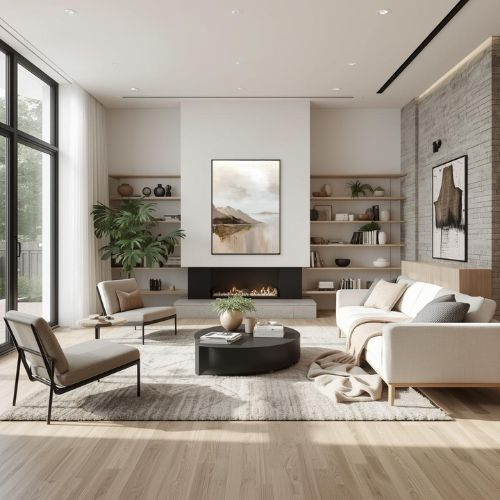

Scandinavian design became globally popular in the 1950s and is still one of the most influential interior styles today.
The style originated in countries such as Sweden, Denmark, Norway, Finland, and Iceland, where long winters encouraged the use of bright colors and natural light in interior spaces.
Scandinavian interiors often combine minimal decoration with functional furniture and natural materials like wood, wool, and linen.
Famous Scandinavian designers such as Arne Jacobsen and Alvar Aalto helped shape modern furniture design around the world.
Scandinavian style originated in Northern Europe and is known for its simplicity, minimalism, and functionality.
The main colors are white, light grey, beige, and soft pastel tones. Natural materials such as wood and cotton are widely used.
Scandinavian interiors create a cozy, warm, and welcoming atmosphere while maintaining a clean and organized look.
Scandinavian interiors focus on simplicity and practicality. Furniture often has clean lines and smooth surfaces.
Large windows are commonly used to allow natural light to fill the room, creating a bright and airy atmosphere.
| Core Principles of Scandinavian Design | |||
|---|---|---|---|
| Simplicity | Functionality | Natural Light | Comfort |
| Materials Used | Light wood | Natural and warm material | Popular choice |
| Linen | Soft textile fabric | Eco-friendly | |
| Wool | Used for cozy decoration | Traditional | |